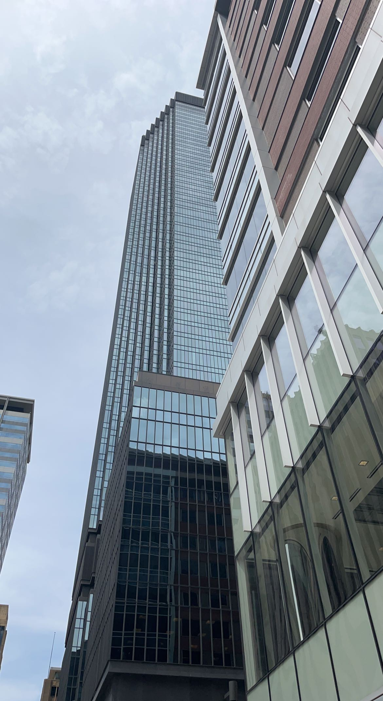
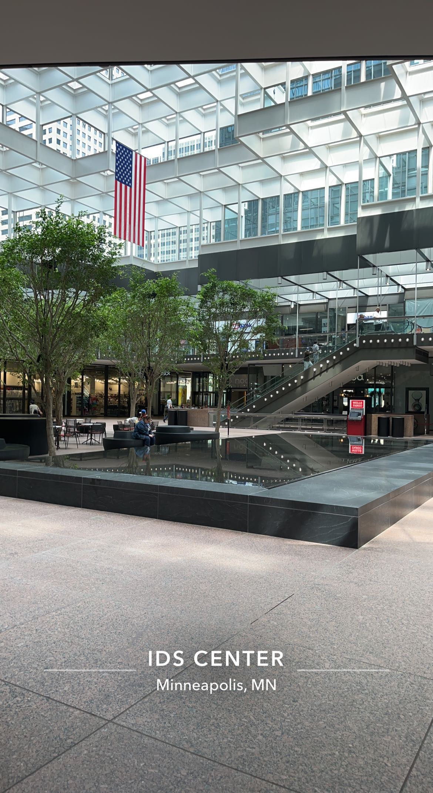
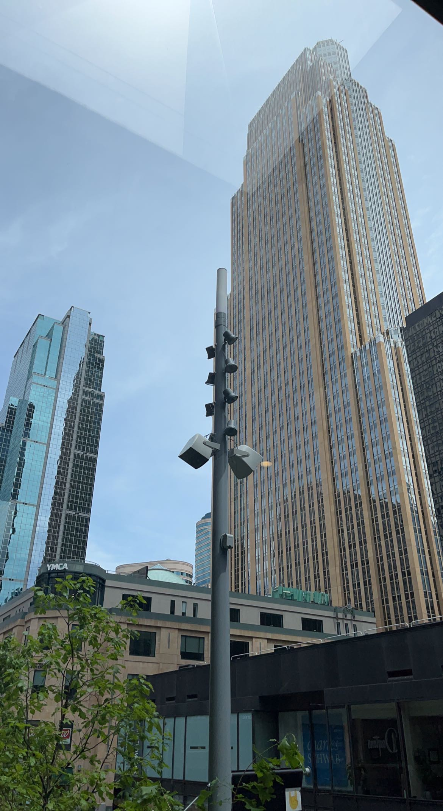
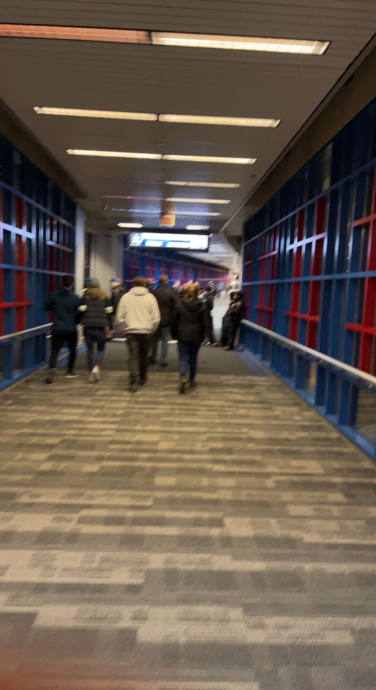

Downtown Minneapolis
Minneapolis is the largest city in the state of Minnesota with a population slightly over 400K. Downtown Minneapolis is the heart of the city bustling with many major businesses that have skyscrapers and people going about their business during the day and nightlife at night. An excellent way to be able to explore the entire city centre is by it's skyways that connect all of the buildings together! Designed primarily for the harsh winters, this way you can avoid waiting to cross streets and at the same time get an elevated view of the city! Below we will include some must see spots that the heart of the city has to offer as well as a video of what it looks like to drive into it!
- IDS Center and Food Court
- The Wells Fargo Center
- The Foshay Tower
- The Guthrie
- The Capella Tower
- Minneapolis City Hall
- The Flour Mill Building
- Thrivent Financial Building
   